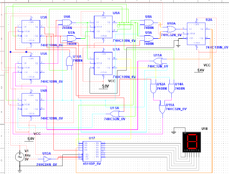
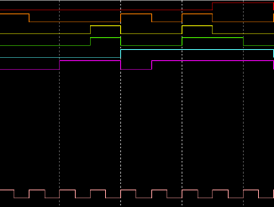

Designed a sequential logic circuit from scratch — deriving state transition tables, synthesizing Boolean expressions via Karnaugh maps, and implementing the circuit with six J-K flip-flops and combinational logic to cycle a 7-segment display through a 9-digit numeric sequence.


Design a sequential logic circuit that cycles a 7-segment display through a specific 9-digit numeric sequence. The inputs to the display decoder must be driven entirely by flip-flop outputs from a custom-designed finite state machine — no microcontroller, no programmable logic, just discrete gates and flip-flops.
The design started with a state transition table mapping each digit in the sequence to a unique binary state across six bits (Q0–Q5). Four bits encode the BCD value for the display, and two auxiliary bits resolve states where the same digit appears multiple times in the sequence. From this table, a full excitation table was derived for the J and K inputs of each J-K flip-flop across all nine states.
Karnaugh maps were constructed for all twelve inputs (J and K for each of the six flip-flops) to extract minimized sum-of-products Boolean expressions. Several simplifications emerged from the analysis: two inputs shared identical logic and could use a single gate, two K inputs were constant zero (tied to ground), and two J inputs depended directly on a single flip-flop output with no combinational logic required.
Both sum-of-products and product-of-sums forms were evaluated. SOP consistently required fewer gates for this particular state sequence, so it was used for the final implementation. An alternate circuit design was also explored using don't-care conditions on the auxiliary bits, requiring one additional gate but providing more robust handling of undefined states.
The circuit was built in Multisim using 74HC109 J-K flip-flops, 7408 AND gates, 74HC32 OR gates, a 74HC04 NOT gate, a 4511 BCD-to-7-segment decoder, and a 1 Hz clock source. Each wire in the schematic follows a color code tied to its source flip-flop for traceability. The timing diagram was verified using Multisim's logic analyzer, confirming the correct state sequence across all nine transitions.
The completed circuit correctly cycles through all nine digits of the target sequence on the 7-segment display, driven by a fully custom FSM with minimized combinational logic. The project demonstrates the complete digital design flow: state table derivation, excitation table construction, Karnaugh map minimization, Boolean expression synthesis, circuit implementation, and timing verification.